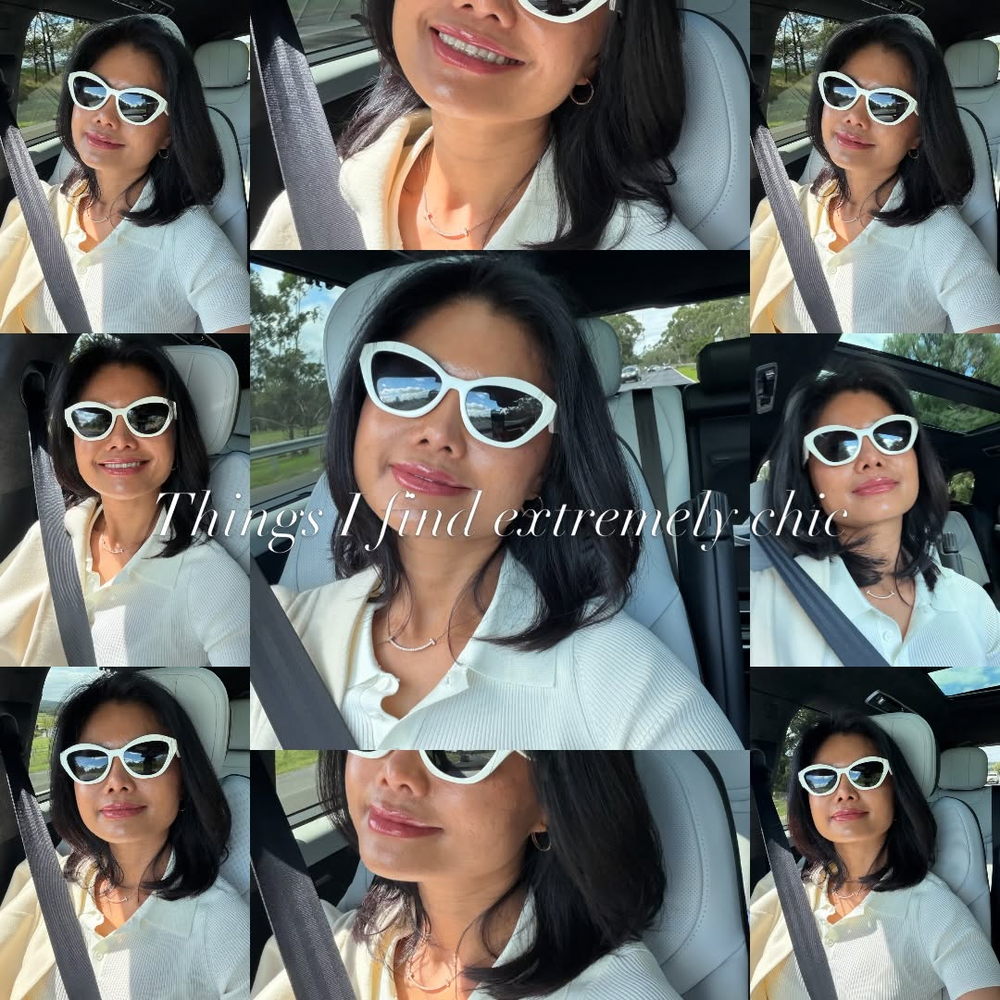
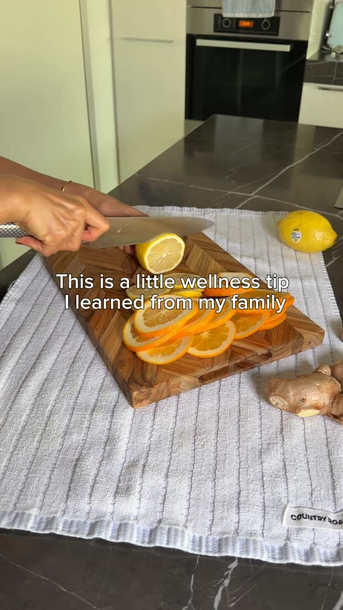
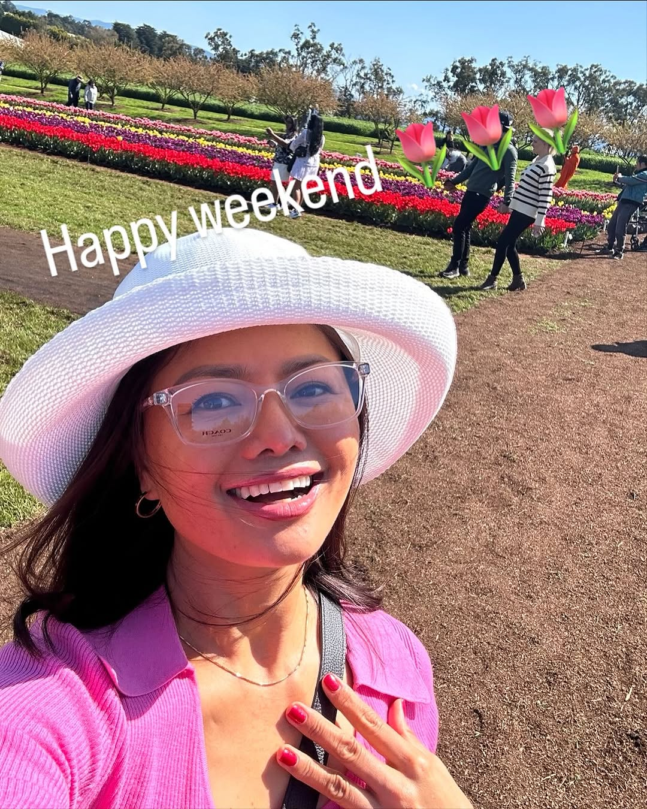

Một đề xuất -- Viết riêng cho một người
Một brand được xây từ trải nghiệm thật, từ những bí quyết truyền qua nhiều thế hệ, và từ sự chọn lựa nhỏ bé mỗi ngày để sống đẹp hơn.
01 / 07
Chị không chia sẻ wellness như một xu hướng đang hot. Chị chia sẻ vì chị đang sống nó - từ ly nước ấm mật ong chanh mỗi buổi sáng, đến cách chị nghĩ về phụ nữ tuổi 40 như đang nói chuyện với một người bạn thân, không phải đứng trên bục giảng bài. Đó là điều em nhận ra khi đọc hết trang của chị.
Em cũng thấy chị hay viết về việc sống đủ đầy từ bên trong - không cần phải tỏa sáng cho ai, không cần phải hoàn hảo, chỉ cần mỗi ngày chọn sống tốt hơn một chút cho chính mình. Cái triết lý đó chạy xuyên suốt trong content của chị, từ những bài ngắn về buổi sáng đến những bài dài về tâm lý phụ nữ.
Hai câu này em lưu lại khi đọc:

"Người hạnh phúc thật sự sẽ khích lệ bạn... Bởi vì họ có đủ. Đủ đầy bên trong nên không cần phải kéo ai xuống để cảm thấy mình cao hơn."@rubyphamvn, tháng 3/2026
"Đẹp không phải để ai ngắm - mà để mình tự tin bước đi."@rubyphamvn, tháng 3/2026
Chị có câu chuyện sống thật, có triết lý được tích lũy qua nhiều năm, có lối nhìn về phụ nữ và sức khỏe mà rất ít người đang nói tới theo cách của chị. Nhưng phần lớn điều đó vẫn còn nằm im trong đầu chị, chưa ra hết được trên trang. Đó là khoảng trống lớn nhất em nhìn thấy - và cũng là lợi thế chỉ mình chị mới có.
02 / 07
Bài hay nhất của chị là một công thức
Bài "An Asian wellness secret we've been using for generations" của chị đạt 795 lượt xem và 22 likes - cao gấp 12 lần trung bình của cả trang. Format của bài đó rất đơn giản: một bí quyết từ thế hệ trước, một nghi thức cụ thể, không cần giải thích dài. Chị dùng nó một lần rồi bỏ qua - trong khi đây là angle mà chị có lợi thế tuyệt đối, vì chị đang thực sự sống nó.
795 lượt xem vs. trung bình 65 / 22 likes vs. trung bình 5.5Cơ hội: Một series mỗi tuần một Reel - mỗi bài một bí quyết wellness mà gia đình hay thế hệ trước đã dùng, kể bằng giọng của chính chị. Không ai trong niche của chị đang làm điều này từ góc độ người trong cuộc như chị.
Profile của chị không có cửa vào
Chị không có link nào trong bio. Không có trang để người xem nhận thêm thứ gì từ chị. Không có cách nào để tiếp tục kết nối sau khi họ xem xong một bài. Mỗi người ghé thăm trang của chị chỉ có hai lựa chọn: bấm follow hoặc bỏ đi. Không có lựa chọn nào ở giữa.
Không có link bio / không có trang thu thập thông tin / không có DM funnelMột trang nhỏ đặt ở bio - ví dụ một tài liệu wellness ngắn chị tặng miễn phí - có thể biến người xem thành người chị giữ liên lạc được lâu dài, dù Instagram thay đổi ra sao.
Khi chị viết tiếng Việt, người ta phản hồi thật sự
Các bài tiếng Anh của chị có view cao hơn. Nhưng những bài tiếng Việt - nhất là các bài dài về tâm lý phụ nữ, về sống đủ đầy, về việc không cần phải rực rỡ - lại nhận được comment nhiều hơn hẳn. Người ta trích câu của chị lại, kể chuyện của họ. Đó là dấu hiệu của một cộng đồng đang hình thành. Việc đổi qua đổi lại giữa hai ngôn ngữ hiện tại khiến cả hai nhóm đó đều chưa cảm thấy được nói chuyện trực tiếp.
Bài tiếng Việt trung bình 1.4 comments vs. bài tiếng Anh 0.3 commentsPhụ nữ Việt 40+ đang sống ở Úc là một nhóm hầu như chưa có ai phục vụ tốt trên Instagram. Chị không cần đi tìm niche đó - chị đã là người đó rồi. Chị chỉ cần chọn đúng ngôn ngữ và nói nhất quán hơn.
03 / 07
Bắt đầu ở đây
Nền tảng
Thực hiện
Thực hiện
04 / 07
Trước khi viết hai bài này, em đọc hơn 20 caption đầy đủ của chị - không phải để lấy chủ đề, mà để hiểu chị viết theo cách nào. Nhịp câu ngắn hay dài, chị hay mở bài thế nào, những từ chị dùng lại nhiều lần, cách chị kết thúc một suy nghĩ. Mỗi bài dưới đây được viết theo đúng giọng đó.

rubyphamvn · Reel caption
Ba đời nhà mình, chưa ai mua kem dưỡng da đắt tiền. Nhưng mà bà mình vẫn đẹp. Da vẫn sáng. Tóc vẫn dày đến 70 tuổi. Hỏi bà bí quyết gì, bà chỉ cười: "Ăn ngon, ngủ đủ, không sợ hãi." Không sợ hãi. Ý bà là: đừng để nỗi lo của ngày mai ăn mất ngày hôm nay. Mình ngồi nghĩ lại nhiều thứ mình đang làm để chăm sóc bản thân. Nhưng có lẽ những gì bà làm mới là wellness thật sự. Đơn giản đến mức mình quên mất nó có giá trị. Chị có ai trong nhà có bí quyết quen như vậy không? Chia sẻ cho mình biết với nha. #glowfromwithin #rubyphamvn #wellnessforwomen #phunuvietnam

rubyphamvn · Carousel caption
Có những buổi sáng mình không muốn làm gì cả. Không muốn mở điện thoại. Không muốn check tin nhắn. Chỉ muốn ngồi yên với ly nước ấm. Hồi trước mình hay tự trách: "Sao hôm nay lười thế." Giờ thì mình hiểu ra rồi. Đó không phải là lười. Đó là cơ thể đang xin được nghỉ. Phụ nữ mình hay quen với việc phải liên tục. Liên tục làm, liên tục cho, liên tục ổn. Nhưng "ổn" thật sự là biết khi nào cần dừng lại. Buổi sáng yên tĩnh không phải là buổi sáng lãng phí. Đó là buổi sáng mình chọn sống chậm lại một chút - cho mình. Bạn hay bắt đầu buổi sáng thế nào? #wellnessforwomen #songdep #rubyphamvn #phunuvietnam40plus
05 / 07
Em audit 100 bài đăng của chị, tính số liệu engagement, đọc những caption dài nhất, và xác định giọng viết của chị trước khi viết bất kỳ dòng nào trong đề xuất này. Phần lớn người làm SMM gửi cùng một bài pitch cho mọi khách hàng, chỉ thay tên ở trên cùng.
Ai cũng có thể thiết kế carousel đẹp. Việc của em là đảm bảo khi chị viết một bài và em viết một bài, người đọc không phân biệt được cái nào là của ai. Hai bài sample ở trên là cách em chứng minh điều đó.
Trang landing page, email list, DM funnel - đây là thứ biến follower thành người thực sự gắn bó với chị lâu dài. Engagement đẹp nhưng nếu không có nơi dẫn người ta đến, nó chỉ dừng lại ở đó.
Phụ nữ Việt 40+ tại Úc là một nhóm hầu như chưa có creator nào phục vụ thật tốt. Chị không cần đi tìm niche đó - chị đã là người đó rồi. Em chỉ cần giúp chị xuất hiện đúng cách và nhất quán hơn.
06 / 07
Không cần vội. Không cần hứa hẹn gì. Chỉ cần một cuộc trò chuyện nhỏ - bất cứ khi nào chị thấy hợp.
Nhắn tin cho em